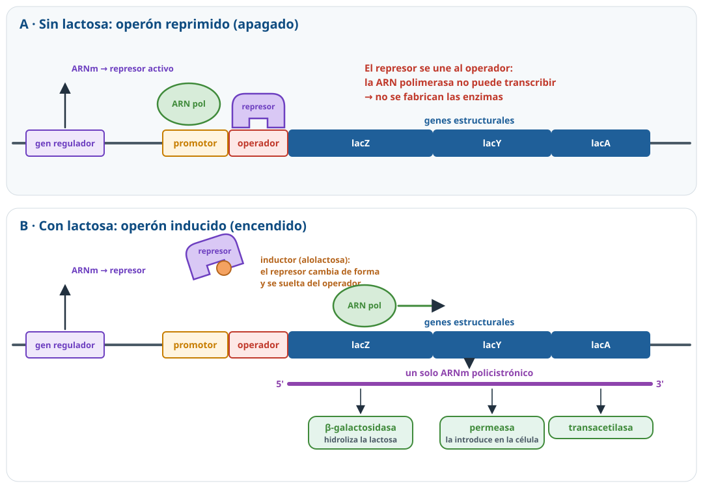
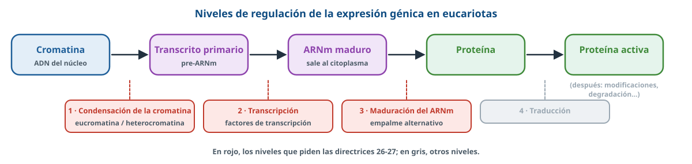
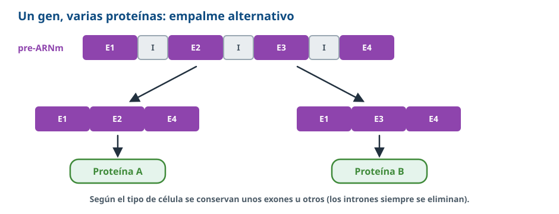
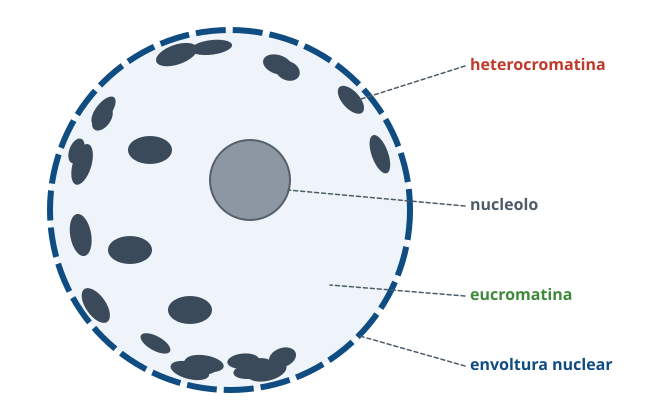
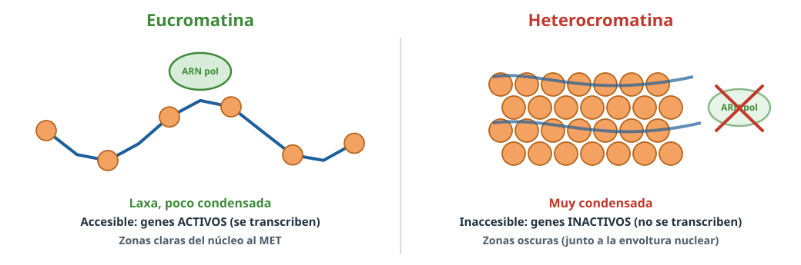
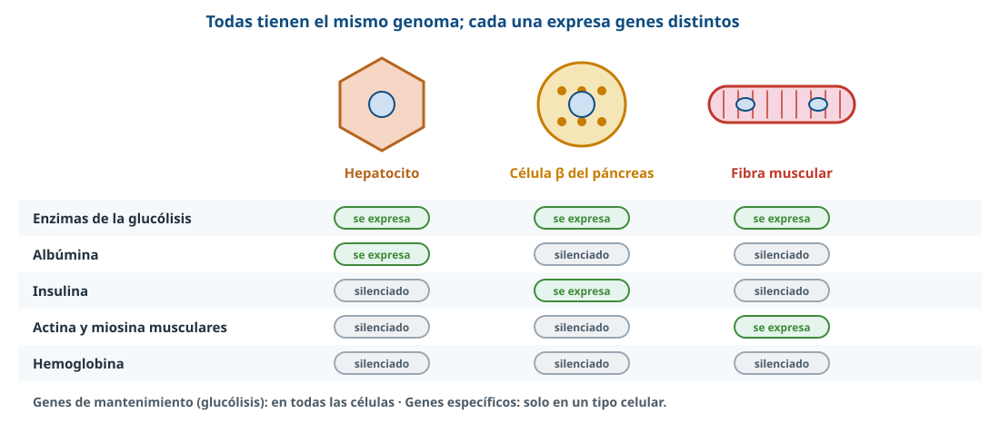

Todas tus células tienen los mismos genes, pero una neurona no se parece a un glóbulo blanco. La clave está en qué genes se encienden y cuáles se apagan.
Palabra clave = lo que buscan los criterios oficiales de correcciónTexto en violeta = aclaración de BioCelia que no está en los criterios
1Qué entra en la PAU
Directrices de Andalucía 2026-27 · todo lo que entra en este tema
Texto literal de los resultados de aprendizaje de las Directrices y Orientaciones de Biología 2026-27. Cada punto está desarrollado en estos apuntes.
B.5.3 Regulación de la expresión génica: reconocimiento de su importancia en la diferenciación celular.
Conocer el modelo del operón como sistema de regulación de la transcripción en procariotas, utilizando como ejemplo el operón lactosa.
Comprender los distintos niveles de regulación de la expresión génica en eucariotas (grado de condensación de la cromatina, transcripción y maduración del ARNm), identificando el grado de condensación del ADN (eucromatina y heterocromatina) como un factor clave de diferenciación celular.
Comprender que las características específicas de cada tipo celular dependen del conjunto de genes que se expresan en ella.
Un contenido casi nuevo
En los exámenes de Andalucía de 2010-2025 apenas se ha preguntado (sí la idea de que dos células del mismo individuo tienen el mismo genoma pero distintas proteínas). Con las directrices de 2026-27 es fácil que aparezca en preguntas competenciales: interpretar un esquema del operón, predecir qué pasa con o sin lactosa o razonar la diferenciación celular.
2¿Por qué regular la expresión génica?
Una célula no expresa todos sus genes a la vez. La regulación de la expresión génica es el conjunto de mecanismos que controlan qué genes se expresan, cuándo y en qué cantidad.
Ahorro: fabricar proteínas cuesta mucha energía y materia; solo se fabrican las que se necesitan.
Adaptación al medio (sobre todo en bacterias): por ejemplo, fabricar las enzimas que digieren la lactosa solo cuando hay lactosa.
Diferenciación celular (en pluricelulares): cada tipo celular expresa un conjunto distinto de genes.
Tipo de gen
Qué hace
Genes estructurales
Codifican las proteínas que la célula usa (enzimas, proteínas estructurales…)
Genes reguladores
Codifican proteínas que controlan la expresión de otros genes (por ejemplo, el represor del operón)
Genes de mantenimiento(constitutivos)
Se expresan siempre y en todas las células porque son imprescindibles (enzimas de la glucólisis, ARNr…)
3Procariotas: el operón lactosa
Un operón es un conjunto de genes estructurales contiguos, con funciones relacionadas, que se transcriben juntos en un solo ARNm (policistrónico) bajo el control de un mismo promotor y un mismo operador. Lo propusieron Jacob y Monod(1961; premio Nobel en 1965) estudiando Escherichia coli. La regulación ocurre sobre todo en la transcripción.
Elementos
Elemento
Qué es
Genes estructurales
Codifican las enzimas que metabolizan la lactosa: lacZ (β-galactosidasa, que hidroliza la lactosa en glucosa y galactosa), lacY (permeasa, que la introduce en la célula) y lacA (transacetilasa)
Promotor
Secuencia donde se une la ARN polimerasa
Operador
Secuencia, entre el promotor y los genes, donde se une el represor; actúa como un «interruptor»
Gen regulador
Gen próximo (lacI) que codifica la proteína represora; se expresa siempre
Inductor
Molécula que inactiva al represor: la lactosa(en realidad, la alolactosa, un isómero que se forma a partir de ella)

Figura 1. Funcionamiento del operón lactosa.
Funcionamiento
Sin lactosa: el represor, activo, se une al operador e impide que la ARN polimerasa transcriba los genes estructurales. No se fabrican enzimas que no hacen falta: el operón está reprimido.
Con lactosa: el inductor se une al represor, que cambia de conformación y ya no puede unirse al operador. La ARN polimerasa transcribe los genes estructurales y se fabrican las enzimas que permiten aprovechar la lactosa: el operón está inducido.
Cuando se agota la lactosa, el represor vuelve a estar activo y el operón se apaga de nuevo.
Razonar con mutaciones (muy competencial)
Operador alterado (el represor no se une) o represor que no funciona → los genes se expresan siempre, haya o no lactosa.
Represor que no reconoce el inductor → el operón queda siempre apagado, aunque haya lactosa.
Promotor alterado (la ARN polimerasa no se une) → nunca se expresan.
Para saber más
Si en el medio hay glucosa y lactosa, la bacteria usa primero la glucosa: el operón lac se expresa muy poco hasta que la glucosa se agota (represión catabólica, mediada por el AMPc). Además, hay operones reprimibles, como el del triptófano: sus genes fabrican triptófano y se apagan cuando hay mucho, porque el propio triptófano activa a su represor.
4Eucariotas: niveles de regulación
En eucariotas no hay operones: cada gen tiene su propio promotor y da un ARNm monocistrónico. La regulación es más compleja y se produce en varios niveles:

Figura 2. Los tres niveles que piden las directrices, en rojo.
1. Grado de condensación de la cromatina
Solo pueden transcribirse los genes situados en la cromatina poco condensada (eucromatina), porque la ARN polimerasa y los factores de transcripción tienen acceso al ADN. Los genes de la heterocromatina, muy condensada, quedan silenciados. Lo verás en detalle en el apartado siguiente.
2. Transcripción
La ARN polimerasa eucariota necesita factores de transcripción, proteínas que se unen al promotor y a otras secuencias reguladoras del ADN y activan o inhiben la transcripción. Cada tipo celular tiene su propia combinación de factores de transcripción, y por eso transcribe genes distintos. Algunas señales externas actúan aquí: por ejemplo, las hormonas esteroideas entran en la célula, se unen a un receptor y el complejo actúa como factor de transcripción.
3. Maduración del ARNm
El transcrito primario puede procesarse de distintas formas. Con el empalme alternativo, un mismo pre-ARNm conserva unos exones u otros y origina ARNm diferentes y, por tanto, proteínas diferentes a partir de un solo gen. Por eso los unos 20 000 genes que codifican proteínas en el genoma humano dan lugar a muchas más proteínas distintas.

Figura 3. Empalme alternativo.
También se regula la salida del ARNm del núcleo, su duración en el citoplasma, la traducción y la activación o degradación de las proteínas; las directrices no lo exigen.
5Eucromatina y heterocromatina

Figura 4. Núcleo interfásico al microscopio electrónico (esquema).
En el núcleo interfásico la cromatina presenta distintos grados de condensación:
Eucromatina: poco condensada (laxa); es la cromatina activa, cuyos genes se transcriben. Al microscopio electrónico se ve clara.
Heterocromatina: muy condensada; es la cromatina no activa: sus genes no se transcriben. Se ve oscura, a menudo junto a la envoltura nuclear.

Figura 5. El grado de condensación decide si un gen es accesible.
Heterocromatina constitutiva: está condensada en todas las células (por ejemplo, junto a los centrómeros y en los telómeros).
Heterocromatina facultativa: se condensa solo en algunas células, y así silencia los genes que ese tipo celular no necesita. Por eso es un factor clave de la diferenciación celular. Ejemplo clásico: en las células de las hembras de mamífero uno de los dos cromosomas X se condensa casi por completo y la mayoría de sus genes quedan inactivos (corpúsculo de Barr).
La condensación depende de modificaciones químicas que no cambian la secuencia del ADN, como la acetilación de las histonas (descondensa) o la metilación del ADN (condensa y silencia). Se heredan al dividirse la célula y se estudian en la epigenética.
6Expresión génica y diferenciación celular
Todas las células somáticas de un individuo contienen el mismo genoma, porque proceden del cigoto por mitosis. Sin embargo, una célula hepática y una renal fabrican proteínas distintas: las células se especializan expresando proteínas diferentes por una expresión diferencial del genoma.

Figura 6. Mismo genoma, distinto conjunto de genes activos.
Las características de cada tipo celular (forma, función, proteínas) dependen del conjunto de genes que se expresan en ella.
Los genes de mantenimiento se expresan en todas las células; los genes específicos, solo en un tipo celular (la insulina, en las células β del páncreas; la albúmina, en los hepatocitos).
Durante el desarrollo embrionario, la diferenciación se consigue condensando en heterocromatina los genes que no se usarán y activando, con factores de transcripción concretos, los que caracterizan cada tejido.
Una prueba: la clonación
La oveja Dolly (1996) se obtuvo con el núcleo de una célula de glándula mamaria introducido en un óvulo sin núcleo. Que de un núcleo diferenciado saliera un animal completo demuestra que las células diferenciadas conservan todos los genes: lo que cambia es cuáles se expresan.
7Regulación en procariotas y eucariotas
Procariotas
Eucariotas
Para qué
Adaptarse rápidamente a los cambios del medio
Además, la diferenciación celular y el desarrollo
Organización
Operones: varios genes, un promotor, un ARNm policistrónico
Cada gen con su promotor; ARNm monocistrónico
Niveles principales
Sobre todo la transcripción (represor y operador)
Condensación de la cromatina, transcripción (factores de transcripción), maduración del ARNm y otros
Cromatina
No hay (ADN sin histonas)
Eucromatina / heterocromatina
8Así se pregunta en la PAU
PAU 2017 · Reserva B1 punto
Si comparamos una célula hepática con una célula renal del mismo individuo: a) ¿contendrá su ADN la misma información genética? [0,5]; b) y las proteínas de ambas células, ¿serán las mismas? [0,5]. Razone las respuestas.
Ver respuesta modelo
a) Sí: todas las células somáticas de un individuo contienen el mismo genoma(proceden del cigoto por mitosis).
b) No: las células se especializan expresando proteínas diferentes por una expresión diferencial del genoma. Comparten las de mantenimiento, pero cada una expresa además sus genes específicos.
Banco PAU · Biología celularCon imagen
En una imagen del núcleo de una célula eucariota se señalan el nucleolo, la heterocromatina, un poro nuclear, la eucromatina y la envoltura nuclear. Indique una función de cada uno.
Ver respuesta modelo
Nucleolo: biosíntesis de componentes de los ribosomas. Heterocromatina: cromatina no activa. Poro nuclear: transporte de moléculas a través de la envoltura. Eucromatina: cromatina activa. Envoltura nuclear: separa el núcleo del citoplasma.
Práctica BioCelia · estilo 26-272 puntosLaboratorio
Se cultivan bacterias E. coli en tres medios y se mide la actividad β-galactosidasa: medio 1, sin lactosa: actividad casi nula; medio 2, con lactosa: actividad alta; medio 3, con lactosa, pero con una cepa mutante: actividad alta también en ausencia de lactosa. a) ¿Qué es un operón? Nombre sus elementos [0,6]. b) Explique los resultados de los medios 1 y 2 [0,8]. c) Proponga dos mutaciones que expliquen el resultado de la cepa mutante [0,6].
Ver respuesta modelo
a) Conjunto de genes estructurales contiguos que se transcriben juntos en un único ARNm bajo el control de un mismo promotor y un mismo operador. Elementos: genes estructurales, promotor, operador y gen regulador (que codifica el represor).
b) Sin lactosa, el represor se une al operador e impide que la ARN polimerasa transcriba los genes: no hay β-galactosidasa. Con lactosa, el inductor se une al represor, que cambia de forma y se separa del operador: se transcriben los genes y se fabrica la enzima.
c) Una mutación en el operador que impida la unión del represor, o una mutación en el gen regulador que produzca un represor no funcional. En ambos casos los genes se expresan siempre.
Práctica BioCelia · estilo 26-271 punto
En las micrografías electrónicas de los núcleos de neuronas maduras se observa mucha heterocromatina, mientras que en las células madre embrionarias predomina la eucromatina. a) Explique la diferencia entre ambos tipos de cromatina [0,5]. b) Relacione esta observación con la diferenciación celular [0,5].
Ver respuesta modelo
a) La eucromatina está poco condensada y sus genes son accesibles y se transcriben (cromatina activa); la heterocromatina está muy condensada y sus genes no se transcriben (cromatina inactiva).
b) Las células madre embrionarias aún pueden originar muchos tipos celulares y mantienen accesibles muchos genes. Al diferenciarse, la neurona condensa en heterocromatina los genes que no necesita y solo expresa los propios de su función: su especialización depende del conjunto de genes que expresa.
Práctica BioCelia · estilo 26-271 punto
El gen de la calcitonina se expresa en la tiroides y en algunas neuronas, pero cada tejido obtiene una proteína distinta a partir del mismo gen. a) ¿En qué nivel de la regulación se explica este hecho? [0,4] b) Explique el mecanismo [0,6].
Ver respuesta modelo
a) En la maduración del ARNm (procesamiento postranscripcional). b) Mediante empalme alternativo: del mismo transcrito primario se eliminan los intrones, pero cada tejido conserva una combinación distinta de exones; se obtienen ARNm maduros diferentes que se traducen en proteínas diferentes (en la tiroides, la calcitonina; en las neuronas, el péptido relacionado con el gen de la calcitonina o CGRP).
¿Qué es un operón? VerConjunto de genes estructurales contiguos que se transcriben en un solo ARNm bajo el control de un mismo promotor y operador.
¿Dónde se une el represor? ¿Y la ARN polimerasa? VerAl operador; al promotor.
¿Qué gen codifica el represor? VerEl gen regulador.
¿Qué hace la lactosa (inductor) sobre el represor? VerSe une a él, le cambia la conformación y le impide unirse al operador.
Si el operador está mutado y el represor no puede unirse, ¿qué ocurre? VerLos genes se expresan siempre, haya o no lactosa.
Cita los tres niveles de regulación eucariota de las directrices. VerCondensación de la cromatina, transcripción y maduración del ARNm.
¿Qué cromatina es activa? VerLa eucromatina (poco condensada).
¿Qué son los factores de transcripción? VerProteínas que se unen al ADN y activan o inhiben la transcripción de los genes.
¿Cómo puede un gen dar varias proteínas? VerPor empalme alternativo del pre-ARNm.
¿Por qué una neurona y un linfocito del mismo individuo son tan distintos? VerTienen el mismo genoma pero expresan conjuntos distintos de genes (expresión diferencial).
Fuentes: Directrices y orientaciones de la PAU de Biología de Andalucía (curso 2026-27); criterios oficiales de corrección de la PAU de Andalucía (2017) y banco de preguntas del departamento; resúmenes del departamento; Campbell y Reece, Biología; Alberts y col., Biología molecular de la célula. Esquemas: elaboración propia de BioCelia.